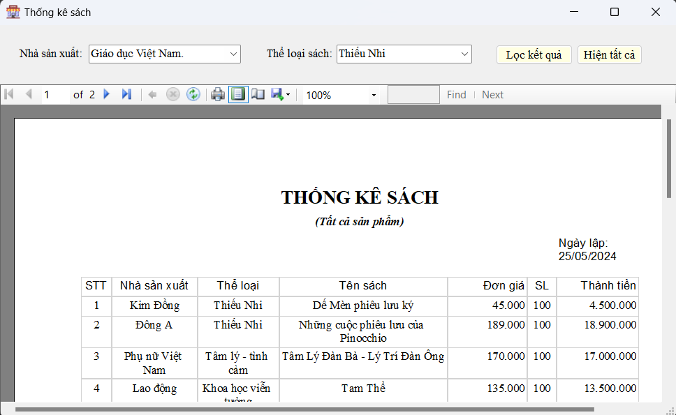

Hướng dẫn sử dụng màn hình Thống kê sách.
1. Chọn nhà sản xuất và thể loại cần thống kê: Ở phía trên của giao diện, có hai ô nhập liệu với nhãn là "Nhà sản xuất:" và "Thể loại sách:". Bạn cần nhập thể loại mà bạn muốn xem báo cáo sản phẩm.
2. Lọc kết quả: Sau khi chọn nhà sản xuất và thể loại sách mong muốn, nhấn nút "Lọc kết quả" để hiển thị báo cáo sản phẩm của nhà sản xuất và thể loại sách đã chọn.
3. Hiện tất cả:: Nếu bạn muốn xem toàn bộ báo cáo mà không lọc theo bất kỳ khoảng thời gian nào, bạn có thể nhấn nút "Hiện tất cả".